noteworthy interactivity from reality
Maybelline Virtual Beauty Studio
“Virtual Try On” for their brand cosmetics: lipsticks, foundation, concealer, blush etc
Matches your foundation shades using AI
https://www.maybelline.com.au/virtual-beauty-studio/virtual-makeup-try-on
Melbourne Museum
Virtual Walk through tour of exhibits
Works the same as google maps
Facebook 360 Photo
- from panorama to immersive, interactive image

Movie Research: Avatar
I watched Avatar this week as research to explore the possibilities of interfaces and interactivity.
A lot of the interfaces I noticed in avatar were three dimensional holograms,
often used for scientific and military purposes and to represent data.
There was also the 'bed' or 'chair' where they project human consciousness into
the corresponding Navi avatar.
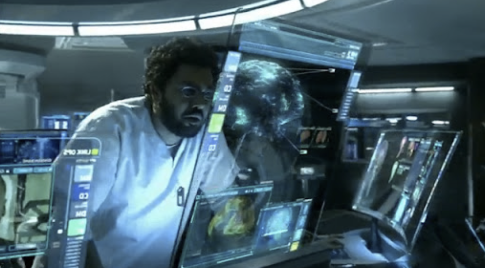
Glitch Manifesto
An example of a interactive website used for promotion of a feminist manifesto
Through further navigation
of the page I found out it promotes an art book and proceeds to give some background information about
the book and when and why it was created. It also includes videos of presentations surrounding
this topic that the creator has put together I would describe the website design as maybe messy?
Not necessarily in a bad way, I think maybe the layout feels a bit unstructured which could be
done on purpose since its a manifesto. The page is still easy to navigate. There’s not a lot of
competing elements so I could follow the information pretty easily from top to bottom.
https://www.legacyrussell.com/GLITCHFEMINISM
reading machines
Noteable Interactions on this Website:
Cross next to the title —> drag cursor over it and it moves in a circle
Click this cross and the text and titles move
As you drag your cursor over the titles they are highlighted and get larger
There is a sound as you drag your cursor over the titles
The sound pitch is increased as you move down the list
Website made by Tiger Dingsun
https://tdingsun.github.io/reading-machines
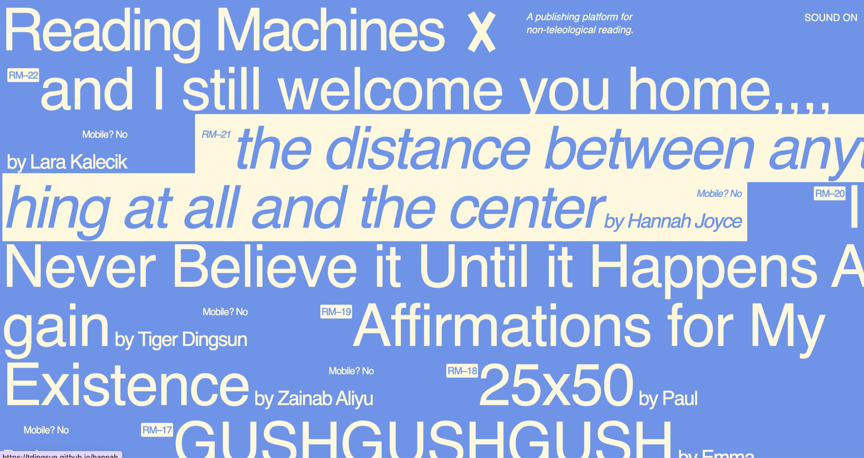
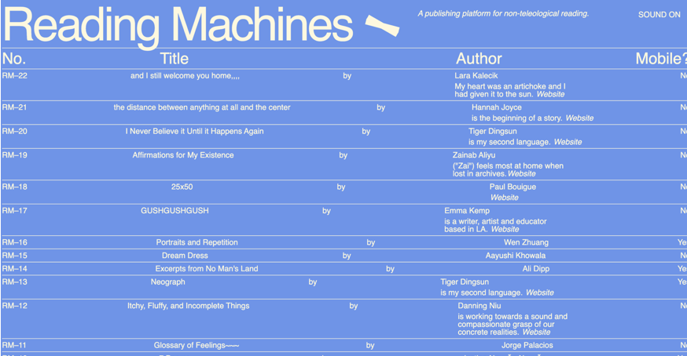
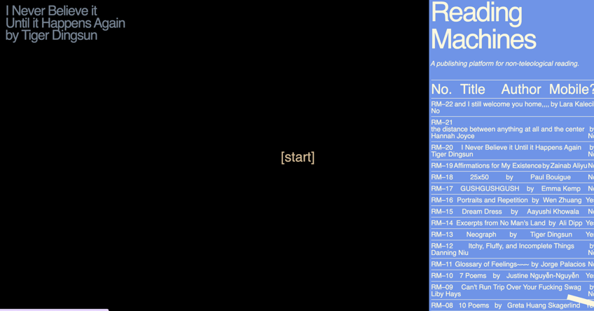
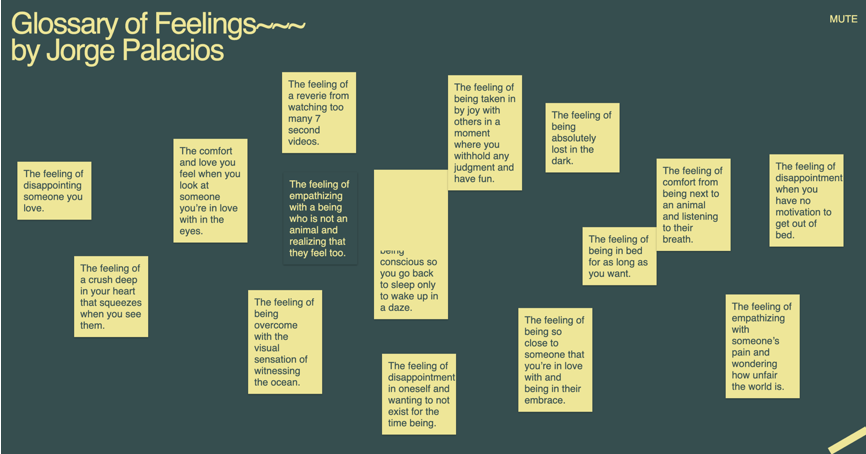
google stitch and web archives
experimentations with stitch:
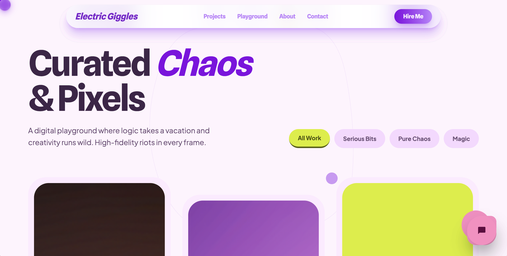
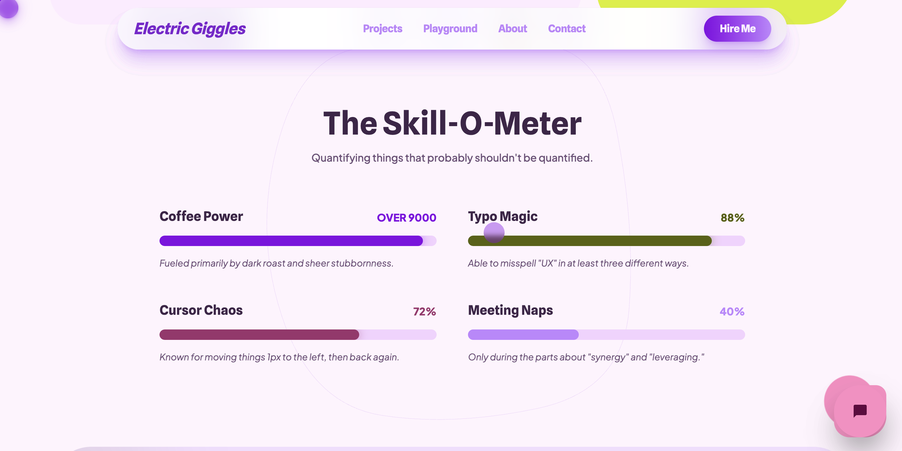
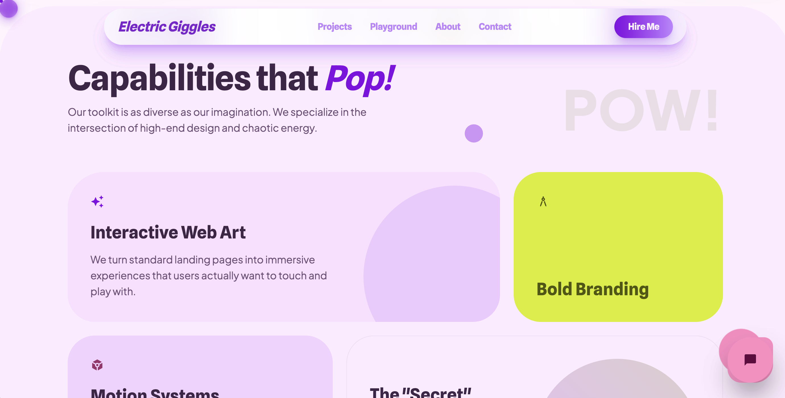
I found I had to be very specific with the details of the design I wanted otherwise I was left disappointed. I was testing it by asking it to create a portfolio which I suppose is more personal, so it is no surprise I was not a fan of the designs as much because it was hard to reflect ME by word prompts alone. Otherwise it was really easy to use, especially exporting and hosting it live took not much time at all.
web archives
https://violetforest.com/scroll-spiral/
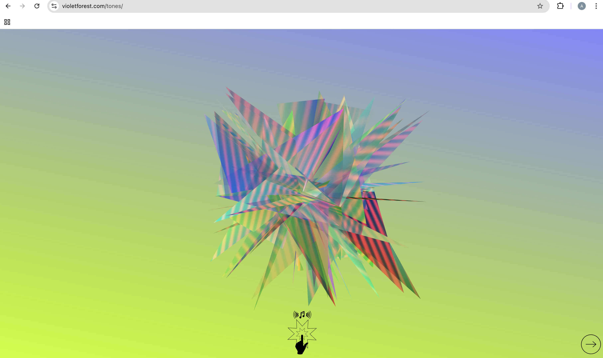
https://variable.gallery/exhibitions
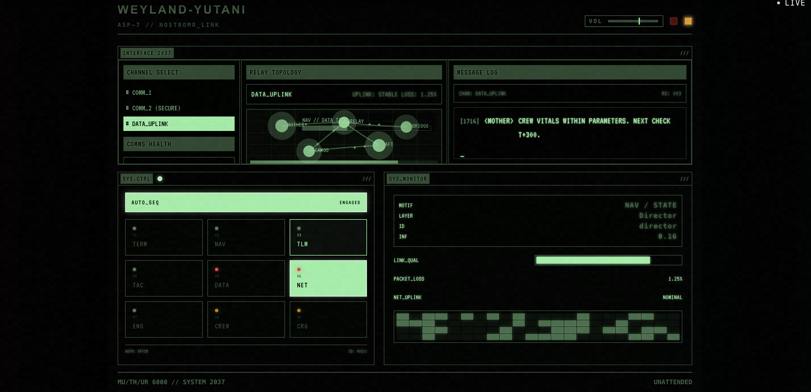
http://weavesilk.com/

https://web.archive.org /web/20100329192558/http://www.mileycyrus.com/

works using a mirror or a webcam
Sonic Mirror Audio Reactive Instruments
https://www.instructables.com/Sonic-Mirror-Audio-Reactive-Instruments/
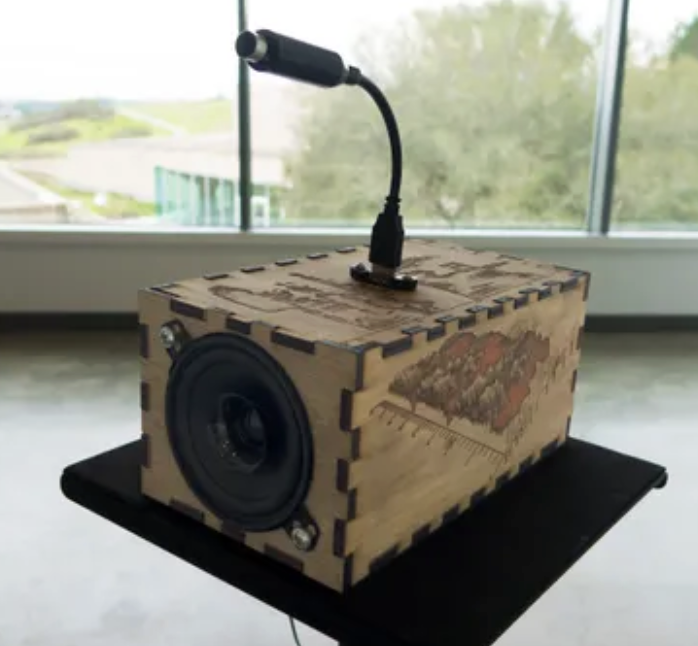
The Sonic Mirror is an electronic instrument that automatically records and synthesizes audio for the creation of interactive sound installations.
I miss your Touch By Betty Sargeant and Justin Dwyer
https://pluginhuman.com/arts/your-touch/
[ i miss your touch ] is interactive art experienced in real time. This video experience transports two people who are in separate locations into a shared virtual environment via webcam.
Yayoi Kusama: Infinity rooms
https://nga.gov.au/stories-ideas/yayoi-kusama-infinity-rooms/

A crop of pumpkins are reflected into infinity by a set of internal mirrors in, THE SPIRITS OF THE PUMPKINS DESCENDED INTO THE HEAVENS, 2017 © YAYOI KUSAMA extracted from https://nga.gov.au/stories-ideas/yayoi-kusama-infinity-rooms/